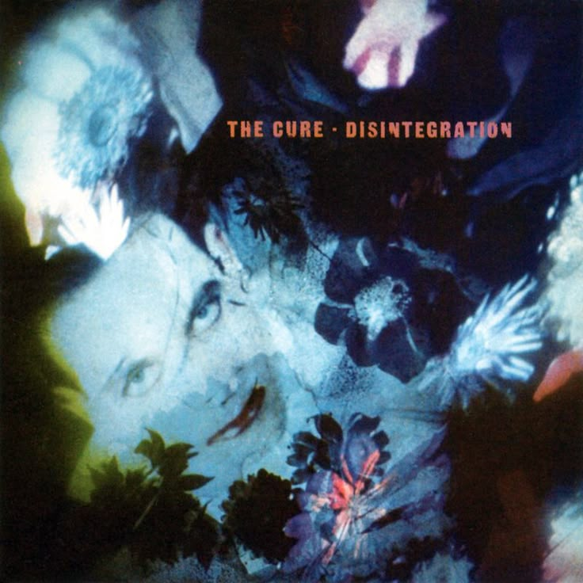
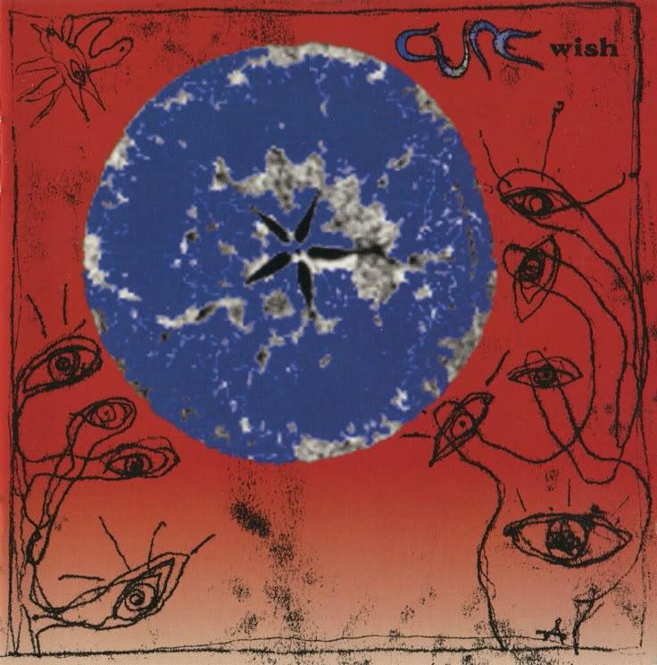
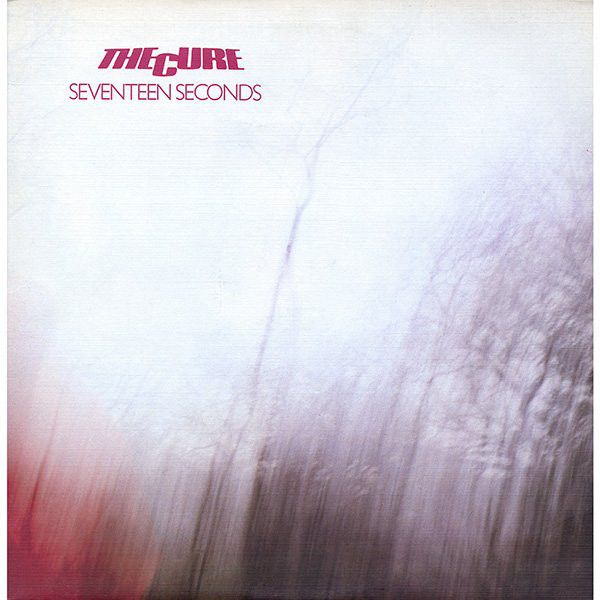
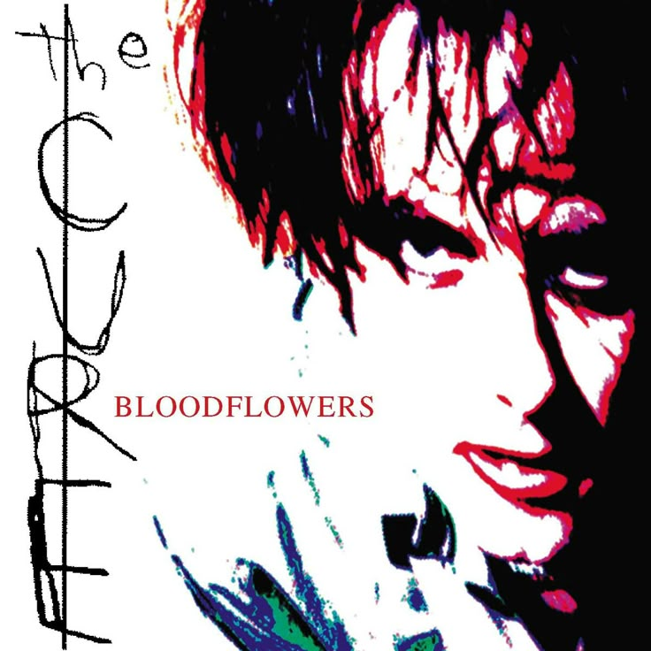

THE CURE:UMA DAS MAIORES BANDAS GÓTICAS
The Cure é uma das bandas mais influentes do movimento post-punk e do rock gótico, surgida no final dos anos 1970, na Inglaterra.
Formada em 1976 em Crawley, a banda é liderada por Robert Smith, vocalista, guitarrista e principal compositor — figura icônica conhecida por seu visual sombrio, maquiagem marcante e cabelo desgrenhado, que acabou se tornando símbolo do estilo gótico.
O som da banda mistura atmosferas melancólicas, guitarras etéreas, letras introspectivas e temas como amor, solidão, morte e existencialismo.
Seu álbum "Pornography" (1982) é considerado um marco do rock gótico, com faixas densas e profundamente emocionais. No entanto, The Cure também surpreendeu o público ao incorporar sons mais leves e alternativos ao longo da carreira, como em "Just Like Heaven", "Friday I'm in Love" e "Lovesong" — o que mostra sua versatilidade artística.
Apesar dessas variações de estilo, a identidade da banda sempre permaneceu autêntica, cultivando uma base de fãs fiel por décadas.
Suas apresentações ao vivo são intensas e marcantes, muitas vezes com longas setlists que percorrem toda a discografia.
The Cure influenciou gerações de músicos e ajudou a moldar a estética e o som da cultura gótica.
Seu legado permanece vivo, sendo reverenciado tanto por fãs antigos quanto por novos admiradores da música alternativa e emocionalmente profunda.
UM POUCO MAIS SOBRE OS ÁLBUNS
História dos Álbuns do The Cure
The Cure é uma das bandas mais emblemáticas do rock alternativo e gótico. Liderada por Robert Smith, sua discografia reflete a evolução emocional e estética da banda, oscilando entre a escuridão melancólica e o pop experimental. Aqui estão os álbuns mais importantes, com destaque especial para os mais famosos:
Pornography (1982)
O álbum que consolidou o rock gótico como gênero. Pornography é sombrio, desesperador e intenso, nascido de um período de crise emocional profunda na vida de Robert Smith. As letras tratam de existencialismo, morte e depressão, com instrumentais carregados e claustrofóbicos. Faixas como “One Hundred Years” e “The Hanging Garden” são destaques dessa era sombria. O disco fecha com a icônica frase: “It doesn't matter if we all die”, mostrando sua atmosfera fatalista.

Disintegration (1989)
Considerado a obra-prima do The Cure, esse álbum é um mergulho na melancolia adulta. Com produção atmosférica, sintetizadores envolventes e guitarras etéreas, Disintegration fala de perda, amor, isolamento e envelhecimento. Sucessos como “Lovesong” (escrita para a esposa de Smith), “Pictures of You” e “Fascination Street” definiram o som da banda para sempre. É o álbum mais emocionalmente carregado e é frequentemente citado como um dos melhores discos da década de 1980.
Wish (1992)
Mais alegre e acessível, Wish representa o auge comercial da banda. Nele, The Cure mistura pop alternativo com suas raízes sombrias. A faixa “Friday I’m in Love” virou um sucesso mundial, com um tom inesperadamente otimista. Mas o álbum também traz faixas introspectivas como “Trust” e “Apart”, mantendo o equilíbrio emocional típico da banda. Wish mostra que o The Cure sabe ser brilhante mesmo fora da escuridão.
Three Imaginary Boys (1979)
O disco de estreia da banda, com som cru, direto e influenciado pelo punk. Ainda sem a estética gótica, este álbum traz faixas como “10:15 Saturday Night”, que introduziram a base do estilo único do grupo.

Seventeen Seconds (1980)
É o início do som mais atmosférico e minimalista do The Cure. A faixa “A Forest” é um dos maiores clássicos da banda. Aqui se consolidam os temas de isolamento e introspecção.
Faith (1981)
Profundamente melancólico, esse álbum é uma jornada espiritual e existencial. As canções são lentas, tristes e meditativas. Faith é sobre desilusão, luto e desesperança, com instrumentais minimalistas e repetitivos que criam um clima quase religioso.

The Head on the Door (1985)
Um dos álbuns mais versáteis da banda. Mistura pop, psicodelia, rock e gótico, com faixas memoráveis como “Close to Me”, “In Between Days” e “Kyoto Song”. Esse disco marcou o sucesso internacional do The Cure e abriu espaço para a fase mais acessível do grupo.

Bloodflowers (2000)
Parte da chamada “trilogia da tristeza” ao lado de Pornography e Disintegration, esse álbum marca o retorno ao tom introspectivo e sério. Foi escrito como uma reflexão sobre o envelhecimento e o fim das ilusões. Com canções longas e melancólicas, é uma obra madura e contemplativa.
A discografia do The Cure é como um diário emocional de quatro décadas. Entre o desespero gótico, o amor sincero e o pop melancólico, a banda deixou um legado profundo na música alternativa. Seus álbuns contam histórias que ainda tocam os corações de fãs no mundo todo.
Gostou do conteudo?
Cadastre-se no nosso site para conhecer mais sobe a banda e testar seus conhecimenos!